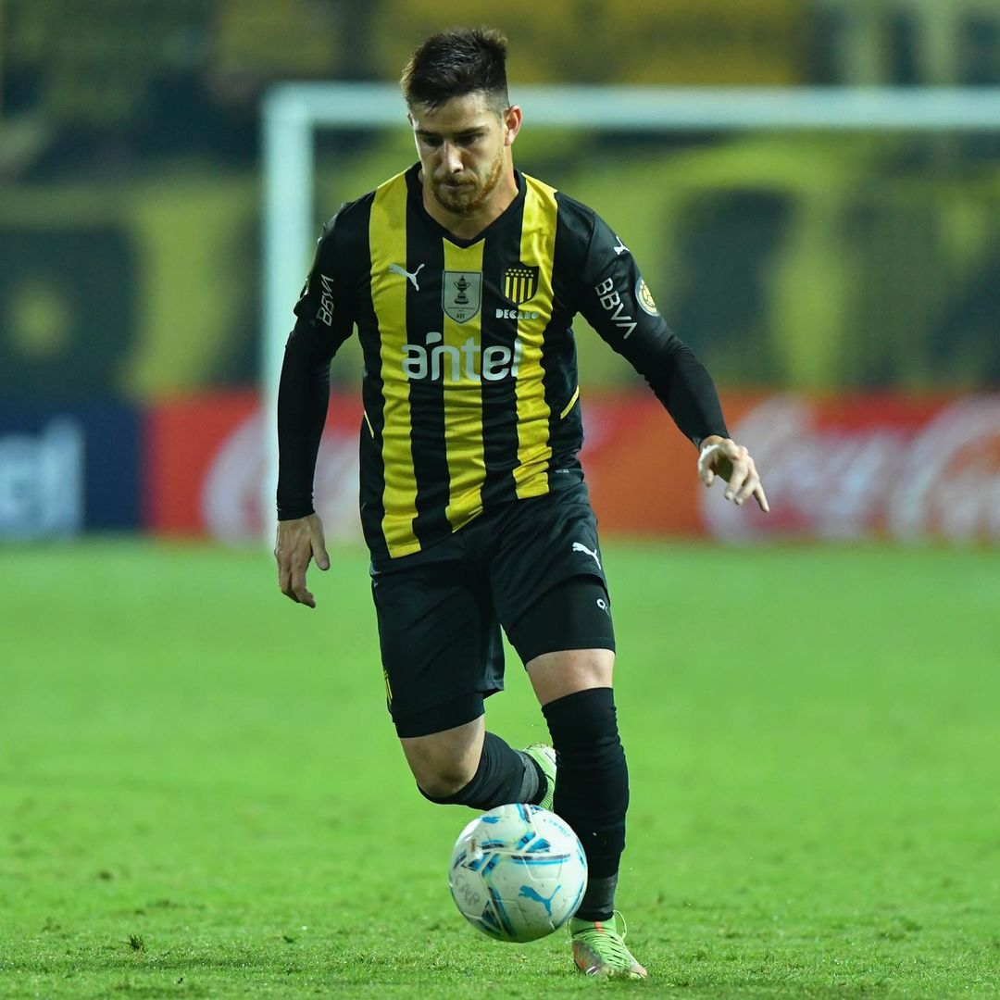

El aurinegro logró una historia por la mínima ante Boston River, igualando a Nacional (Uru) y Deportivo Maldonado en la segunda ubicación a tan solo un punto del líder del Torneo Apertura, el negro de la cuchilla.
Análisis del partido.
El Manya se plantó en cancha con un 11 distinto al habitual de Mauricio Larriera, un 4-4-2 con la gran sorpresa en ofensiva; por fin pudimos ver a Viatri saliendo desde el arranque junto al Canario Álvarez Martínez.
Otros puntos a resaltar fueron la ya tercera titularidad de Máximo Alonso en los últimos 4 partidos. A pesar de la lesión de Carrizo, es cada más evidente la titularidad del campeón sub 20, de hecho hoy Larriera manda a Ceppelini a la banda y, a pesar de poder dejar en el banco a Alonso, decidió dejarlo a Laquintana como suplente. La defensa fue la esperada, Ramos y Aguirregaray laterales y la zaga comandada por Menosse y Elizalde.
El partido comenzó en la fría noche del Campeón del Siglo. Peñarol le entregaba el balón a un Boston inocuo, indistinto, recordemos que el Rojiverde llegaba 1 punto por debajo del Manya y a 4 de los lideres, sin embargo, salió al partido como si fuera uno más. También Peñarol le puso muy difícil el trámite a los dirigidos por Nacho Iturralde, presionando con hasta 6 jugadores en campo enemigo, forzando errores en Boston River durante todo el partido, a tal grado que el gol de Peñarol, a los 12 minutos, surge de un error forzado por Peñarol en la salida del Boston, que culmina con un centro de Ceppelini, recepcionado por Máximo Alonso y rematado por Lucas Viatri. El argentino jugó un gran partido, bajando todos los balones en campo enemigo, siendo vital en la presión del Mirasol, haciendo grandes pases entre líneas y hasta anotando el gol.
Tras anotar el gol el partido estuvo parado durante 3 minutos debido a una lesión de Ramos, una distensión en el gemelo, por la cual seguramente este ausente 2 semanas. Por Ramos entro Jairo O’Neill, lateral capitán de Tercera División, jugador que nunca había jugado un partido oficial en Peñarol, pero lo pudimos observar en varios amistosos de verano y a todos nos había dejado una buena impresión. El juvenil entró muy bien y por su sector llego lo mejor de Peñarol junto a Gargano, Alonso y Viatri. Tuvo varias basculaciones y logró incomodar en más de una ocasión a los laterales rivales, a los cuales supo rebasar. También tuvo buenas combinaciones con Gargano y Alonso, con toques de primera y paredes.
Boston River siguió con el balón y con las nulidades a la hora de pasar al ataque. Se llegaron a ver jugadas de más de 2 minutos del visitante tocando en su campo sumamente ahogado, sin encontrar los espacios y terminando por deshacerse del balón con vagos rechaces que culminaban con el balón en posesión de Peñarol.
El primer tiempo culminó dominado desde lo táctico por el Decano, en un partido aburrido y carente de situaciones de gol, aunque en general con buenas sensaciones para un Carbonero que hacía negocio y se metía de lleno en la definición del Apertura.
El segundo tiempo no cambió su guión, aunque Boston logró avanzar un poco más y hasta llego a exigir (vagamente) a Dawson.
Lo mejor de Peñarol seguían siendo las basculaciones y conexiones realizadas en el sector izquierdo, aunque la más peligrosa llegó por un pase de Canario bombeado, que dejó solo a un Alonso que no logró conectar.
En el minuto 67 Canario y Alonso salieron, ingresando por ellos Betancourt y Laquintana. Larriera falla en el cambio reduciendo muchísimo la ofensiva por el sector izquierdo y otra vez (como ya lo expusimos en un artículo pasado) el entrenador Aurinegro no deja culminar el partido a Álvarez Martínez colocando a un Bentancourt, de nefasto semestre.
A partir de acá las contras y llegadas de Peñarol disminuyen y se vuelven menos voluminosas, perdiendo la posibilidad de liquidar el partido y terminando con otro partido con un solo gol. Peñarol solo anotó en ocasiones 2 goles en un partido este año en partidos oficiales y hoy era el día ideal para firmar el tercero, pero otra vez no hacemos lo que tenemos que hacer, causante quizá del fracaso internacional de este 2022.
En el 80 ingresan Saravia y Da Silveira sacando a Ceppelini y Aguirregaray. El Cachete entró muy bien por el sector izquierdo, ya que ingresó de volante. El doble cinco de Peñarol hoy por hoy es el Mota con Saravia. Da Silveira entró bien y ayudo a cerrar el partido en la parcela defensiva. Digno de mencionar es el bajo rendimiento de un Vasquito que no termina de afirmarse, y seguramente sea la hora de retirarlo del equipo titular. Intenta, quiere mejorar, pero Peñarol no puede esperarlo más, logra llegar al fondo, pero nunca puede concretar una jugada, además de sacarse de encima balones con pelotazos frontales que casi nunca terminan en peligro, más bien sirve para perder la posesión de forma inútil.
El partido acabó con una mejora en Peñarol y con varias conclusiones positivas, cosa rara viendo este semestre: Viatri y Canario debe ser la dupla ofensiva de Peñarol y debemos jugar 4-4-2, la banda izquierda debe ser O’Neill de lateral y Alonso de volante, mejoramos mucho en la presión y logramos ser mucho más dinámicos. El partido sin ser bueno, logró ser un aceptable partido del Manya, Manya que no logró liquidar el partido, cosa que esta vez no le afectó, pero perfectamente le puede suceder, y de hecho ya le sucedió.
Peñarol con esto iguala en puntos a Nacional y Deportivo Maldonado con 25, pero queda afuera de una posible definición por su diferencia de goles ya que es de +5, mientras que el Depor tiene +6 y Nacional +16. También le queda esperar el partido de Liverpool, ya que el Negriazul tiene 23 puntos y jugara ante River en Belvedere para ver si puede quedar solo en la punta. River no se la pondrá fácil, ya que tiene 19 puntos y de ganar seguiría soñando con el Apertura quedando a 3 de los lideres.
Al Manya le quedan (en el Campeonato Uruguayo); River Plate en el Parque Saroldi y Cerro Largo en el Campeón del Siglo.
Artículo escrito por: Vicente Alves.
created with
Website Builder Software .